文字
背景
行間


SSH活動掲示板
カテゴリ:佐倉アクティブ
SSH講座「植物の成分を精製してみよう！」
平成３０年７月１０日（火）の午後、佐倉市の株式会社常磐植物化学研究所において「植物の成分を精製してみよう！」および「植物の色を見てみよう！」をテーマにSSH講座が開催されました。１年生２０名、２年生２名の計２２名が参加し、実験実習、施設見学、ハーブ園研修を行いました。
実験実習では、甘草エキスからその主成分であるグリチルリチン酸の分離に加え、ブルーベーリーやクチナシの花びらから取り出した色の成分が液性によりどのように変化するのかも体験しました。
施設見学では、原料から製品となるまでの一連の流れや研究室での製品チェックの様子などを、わかりやすく説明していただきました。
ハーブ園では、ブルーベリー、クレソン、カレープラント、ライスイヤ、ステビア、サンショ、マロウ、クチナシ、ニッコウキスゲなどについて触れたり、においを確認したり、味をみたりしながら研修しました。最後に暑さを和らげるような冷たい特性ハーブティーも試飲しました。
午後の４時間ほどの講座でしたが、とても充実した講座になりました。


 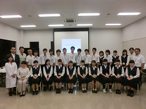
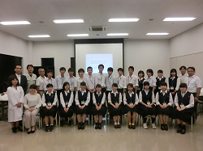
実験実習では、甘草エキスからその主成分であるグリチルリチン酸の分離に加え、ブルーベーリーやクチナシの花びらから取り出した色の成分が液性によりどのように変化するのかも体験しました。
施設見学では、原料から製品となるまでの一連の流れや研究室での製品チェックの様子などを、わかりやすく説明していただきました。
ハーブ園では、ブルーベリー、クレソン、カレープラント、ライスイヤ、ステビア、サンショ、マロウ、クチナシ、ニッコウキスゲなどについて触れたり、においを確認したり、味をみたりしながら研修しました。最後に暑さを和らげるような冷たい特性ハーブティーも試飲しました。
午後の４時間ほどの講座でしたが、とても充実した講座になりました。
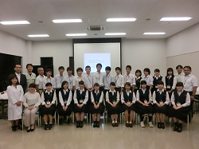 ＳＳＨ講座「チバニアンって何だろう？」を開催しました
7月17日（火）午後，本校地域交流施設にて，現在登録申請中のチバニアン研究の第一人者，茨城大学理学部地球環境科学領域教授の岡田 誠先生をお招きしてＳＳＨ講座が開催されました。
集まった生徒は理数科・普通科を問わず100人あまり。まず，まだ地学を履修していない１年生向けに，３年生地学履修者からの研究発表が60分間行われ，チバニアンについての解説が笑いを交えて楽しく行われました。実はこのとき，大御所の岡田先生が後方でご覧になっており，３年生諸君はそれに気付いた瞬間さぞかし緊張のどん底を味わったことでしょう（笑）。そしてついに岡田 誠先生のご登場です。
講義は地質学の基礎から今をときめく「チバニアン」の最新事情まで，たいへん楽しい内容でした。科学大好き生徒たちは，軽妙に語られる地質学の魅力に惹き付けられ意気盛ん。例えば酸素同位体比率が語る水環境変動のお話はたいへん分かりやすく，なるほどそういうことか！と腑に落ちましたし，気候変動には短期的・長期的な視点があること，宇宙放射線と地磁気変動との関係，そしてチバニアンとはそもそも何なのかなど，新しいことを知るわくわくした楽しみを分かち合えた120分間でした。
講義後も白熱した質疑応答が30分以上続き，講義をよく聴いていないとわからない細かな質問が生徒たちから矢継ぎ早に飛び出しました。岡田先生はそれらにひとつひとつ丁寧にお答えくださり，そのお人柄と相俟って，科学の道を志す生徒たちの心に確かな火を灯してくださいました。
今後も，チバニアンの登録が叶いゴールデンスパイクが打ち込まれるその日まで，佐高生一同注目していきたいと思います。岡田 誠先生，有り難うございました。
 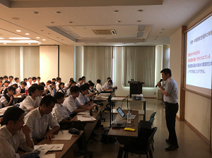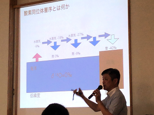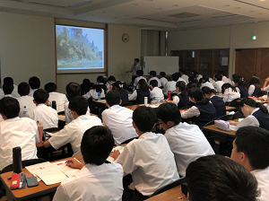
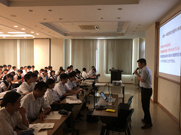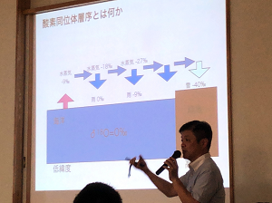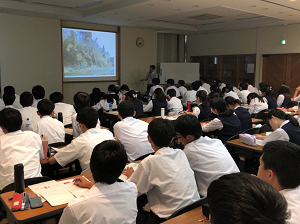
集まった生徒は理数科・普通科を問わず100人あまり。まず，まだ地学を履修していない１年生向けに，３年生地学履修者からの研究発表が60分間行われ，チバニアンについての解説が笑いを交えて楽しく行われました。実はこのとき，大御所の岡田先生が後方でご覧になっており，３年生諸君はそれに気付いた瞬間さぞかし緊張のどん底を味わったことでしょう（笑）。そしてついに岡田 誠先生のご登場です。
講義は地質学の基礎から今をときめく「チバニアン」の最新事情まで，たいへん楽しい内容でした。科学大好き生徒たちは，軽妙に語られる地質学の魅力に惹き付けられ意気盛ん。例えば酸素同位体比率が語る水環境変動のお話はたいへん分かりやすく，なるほどそういうことか！と腑に落ちましたし，気候変動には短期的・長期的な視点があること，宇宙放射線と地磁気変動との関係，そしてチバニアンとはそもそも何なのかなど，新しいことを知るわくわくした楽しみを分かち合えた120分間でした。
講義後も白熱した質疑応答が30分以上続き，講義をよく聴いていないとわからない細かな質問が生徒たちから矢継ぎ早に飛び出しました。岡田先生はそれらにひとつひとつ丁寧にお答えくださり，そのお人柄と相俟って，科学の道を志す生徒たちの心に確かな火を灯してくださいました。
今後も，チバニアンの登録が叶いゴールデンスパイクが打ち込まれるその日まで，佐高生一同注目していきたいと思います。岡田 誠先生，有り難うございました。
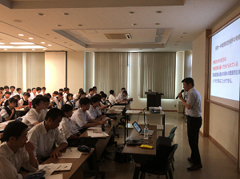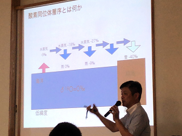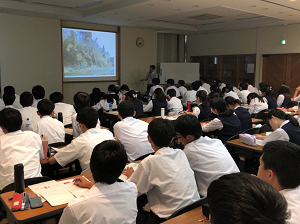 SSH講座「加速器で迫る世界」
7月11日（水）、SSH講座「加速器で迫る世界」として、本校物理実験室にて高エネルギー加速器研究機構(KEK)の宍戸寿郎氏に、宇宙や物質の始まり、KEKの研究施設や研究内容について講義をしていただきました。実際に研究で使われている装置の一部や、最新の研究内容に触れることで、生徒たちの興味や探究心を引き出す良い機会になりました。次回8月23日は、実際につくば市にある研究施設に足を運び、見学する予定です。


生活の中で利用されている化学と企業の開発の取り組み
平成２９年１２月１４日、本校に（株）DICから髙橋雅人様始め４名の研究者の方々をお招きしました。研究者の方々は、DICが行っている研究活動の一端を紹介しつつ、大学で行われている研究活動との目的や方向性の違いなどについて説明してくださいました。また、普段の生活や研究者を歩もうと思ったきっかけなどについても話してくださいました。進路選択を考え始めた生徒にとって、とてもタイミングの良い内容でした。
実験実習は、藻であるスピルリナからいろいろな溶媒を用いて色素を取り出す実験（そのうちの一つはガリガリ君の青色色素であるフィコシアニンでした）。もう一つは粘性を定量する簡易装置を用いて、ハチミツとマヨネーズの粘性の違いについて実習しました。操作を済ませたら終わりでなく自分達の実験結果から考察を発表するミニ研究体験でした。


遺伝子解析講座
平成２９年１２月９日（土）、東邦大学理学部にて、「遺伝子解析講座」が行われました。ＰＣＲ法を利用しての、筋肉の特性を調べる実験です。佐藤浩之教授による講義を受けた後、自分の頬の粘膜細胞から遺伝子を抽出して調べる実験とあって、各自真剣に取り組んでいました。自分がパワースプリントタイプか持久系タイプかその結果を確認し、それぞれの特性を学びながら、遺伝子解析を行う上での利点と問題点について、よく勉強していました。
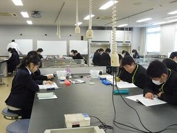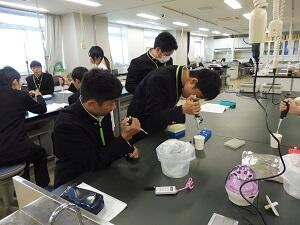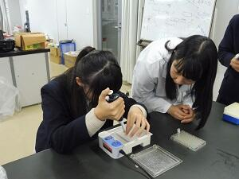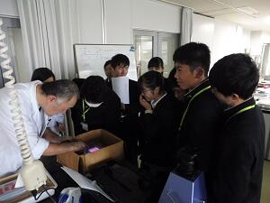
DNAからかたち作りを考える ～細胞性粘菌～
平成２９年１１月１１日（土）、東邦大学理学部において「DNAからかたち作りを考える～細胞性粘菌～」をテーマにSSH講座が開催されました。１年生１０名、２年生１名の計１１名が参加し、細胞性粘菌を用いて遺伝情報から形質が発現するまでの一連の流れについて学びました。粘菌の一種であるキイロタマホコリカビの観察や、施設見学も行いました。
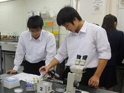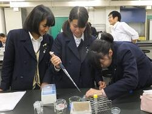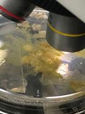
クリスマスレクチャー「有機化学実験講座」
平成２９年１２月２３日（土）、２４日（日）の２日間、東邦大学理学部においてクリスマスレクチャー「有機化学実験講座」が開催されました。
２年生１名、１年生１４名の計１５名（普通科９名、理数科６名）が参加し、解熱鎮痛剤として使用されている「アスピリン（アセチルサリチル酸）」を実際に合成・精製し、精製したものに対して融点測定や定性試験、質量分析、機器分析（MS・IR・NMR）、分子モデリングで同定を行いました。大学の先生やTAの学生さんのサポートを受けながら、一人ですべての工程を行い、全員無事にアスピリンを合成できたことを確認することができました。
| 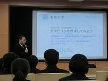 |  | 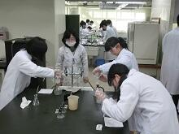 |
| 講義 | 合成実験 | 合成実験 |
 |  | 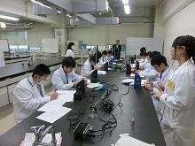 |
| データ分析 | 定性試験 | 融点測定 |
 | 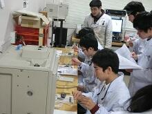 | 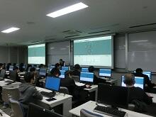 |
| 融点測定 | IR実習 | 分子モデリング実習 |
低温科学講座
１１月１４日（火）の午後、東邦大学理学部から西尾豊先生をお招きして、１年理数科（４０名）を対象に「低温科学講座」を実施しました。沸点が－１９６℃の液体窒素を用いての体験を伴う講義でした。液体窒素に実際に触れたり、液体窒素で空気や酸素を冷却し、液体状態の酸素の色や燃焼の様子、ネオジウム磁石との反応を確認したり、空気から炭酸固体（ドライアイス）を取り出したり、超電導物質を用いての超電導現象（マイスナー効果やピン止め効果）を実際に見たり触れたりしました。午後の短い時間でしたがとても内容が盛りだくさんの講座でした。
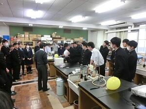
 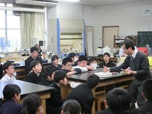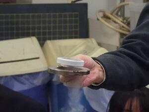
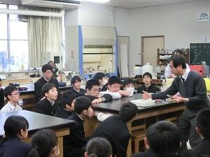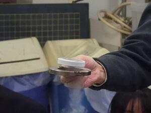 科学で探る ～地球のこと、宇宙のこと～
１０月２日（月）、SSH講座「科学で探る ～地球のこと、宇宙のこと～」で、茨城県つくば市を訪れました。午前は、防災科学技術研究所にて、大型耐震実験施設と大型降雨実験施設の見学をしたのち、Dr.ナダレンジャーによる自然災害実験教室に参加しました。雪崩や地震、液状化現象などについて、実験を通して楽しく学びました。午後は、JAXA筑波宇宙センターを訪問し、きぼう運用管制室や宇宙飛行士養成エリアを見学しました。管制室を訪れた際は、生徒から多くの質問がでました。


 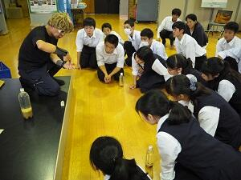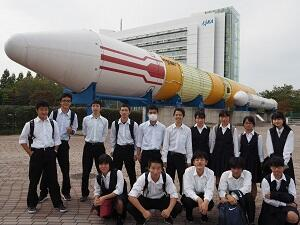
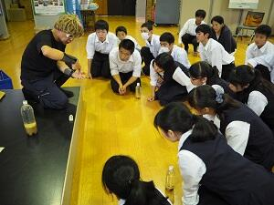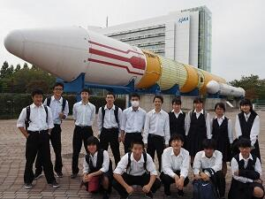
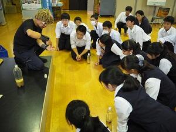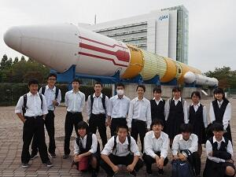 「KEK（高エネルギー加速器機構）」見学
８月２３日（水）最先端の粒子加速器を誇るつくば市のKEKを訪問しました。
午前は、ノーベル賞の小林・益川理論を実験的に証明するなど、多くのすばらしい成果を上げている加速器を中心に施設を見学しました。午後は、大学生・大学院生が全国から集まり実験・研究を行うイベント「サマーチャレンジ」を見学しました。
大学生から研究の内容や楽しさを話してもらったことで、生徒は研究を身近に感じることができたようです。


午前は、ノーベル賞の小林・益川理論を実験的に証明するなど、多くのすばらしい成果を上げている加速器を中心に施設を見学しました。午後は、大学生・大学院生が全国から集まり実験・研究を行うイベント「サマーチャレンジ」を見学しました。
大学生から研究の内容や楽しさを話してもらったことで、生徒は研究を身近に感じることができたようです。
変化アサガオの不思議
平成２９年７月２６日（水）本校理科館において，国立歴史民俗博物館 くらしの植物苑の特別企画「伝統の朝顔」の観察会で講師をされている 仁田坂英二博士（九州大学理学研究院）を講師に迎え，アサガオと遺伝子の関係について講義していただきました。1年生11名，2年生2名が受講しました。初めてその姿を目にした生徒はその異形ぶりに驚嘆し，かつて育てた変化アサガオ（おそらく出物）から種子が採取できなかった経験をもつ生徒はその理由に納得したようです。メンデル遺伝の話に始まり、特に奇異な変異を誘発しているトランスポゾン（動く遺伝子）の転移機構についてお話をしていいただき，生物学の奥深さを感じることできました。
仁田坂先生の爬虫類の単為生殖に関する研究のお話やアサガオの研究は自分がやるしかないと思った子供時代からのアサガオに対する熱意等を伺い，受講者は刺激を受けたようです。


仁田坂先生の爬虫類の単為生殖に関する研究のお話やアサガオの研究は自分がやるしかないと思った子供時代からのアサガオに対する熱意等を伺い，受講者は刺激を受けたようです。
SSH講座「植物の成分を精製してみよう！」
平成２９年７月２１日（金）の午後、佐倉市内の株式会社常磐植物化学研究所において「植物の成分を精製してみよう！」をテーマにSSH講座が開催されました。
１年生１６名、２年生２名の計１８名が参加し、甘草（カンゾウ）エキスから、その主成分である、グリチルリチン酸を分離し確認する実習、施設見学、ハーブ園研修を行いました。
グリチルリチン酸の分離実習では、TLCによる分離およびUVライト下での確認実習の他、4％ショ糖水溶液と0.4%グリチルリチン酸水溶液の甘味体験なども行いました。
ハーブ園研修では、園内で採れた数種類のハーブを使ったハーブティの試飲しながら、オタネニンジン、ウコン、エキナケア、クチナシ、ブルーベリーなどについての講義、園内見学中にはニッコウキスゲの花びらの試食も体験しました。
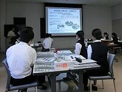
 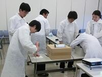
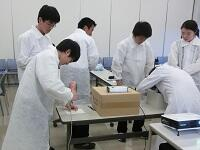 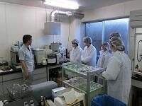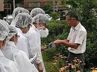
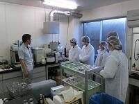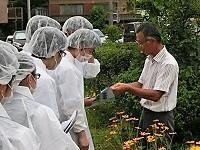

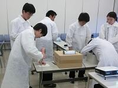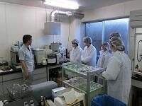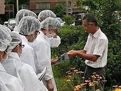科学コミュニケーター体験講座
平成２８年８月４日に、お台場の日本科学未来館にて佐倉アクティブ「科学コミュニケーター体験講座」が開かれました。午前中は自由に館内の見学をしながら、科学コミュニケーターさんにインタビューするなど、科学コミュニケーションの方法や重要性に関して理解を深めていました。また、１０月３日の未来館での展示解説実習に向けて、展示物の情報収集をしっかりと行っていました。午後は、対話型ワークショップに参加し、エネルギーについてディスカッションを行いました。生徒が主婦や政治家、原発立地地域の住民等、それぞれの立場に立ち、与えられた多くのデータからどのような意見が言えるのか議論をしました。生徒たちは、自分たちの考えをしっかりと練り意見をぶつけながらも、他グループの声にもよく耳を傾け考えていました。最後には、「それぞれの立場の役になったことで、エネルギー問題を身近に感じ、自分の事として考えられるようになった。」「幸せの方向性が変わると見方が変わるが、正解はない。広い視野を持って考えることが大切。」と感想を述べていました。
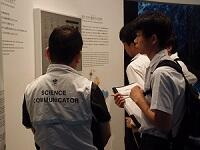
 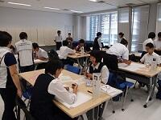
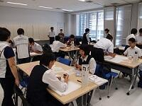


国内サイエンスツアー
７月２８日（木）～７月３０日（土）に群馬県（尾瀬ヶ原他）にて行われました。
  | |
| 神流町恐竜センターにて この後化石発掘体験と恐竜の足跡見学 | 県立ぐんま天文台にて 国内最大級の反射式望遠鏡を見学 |
 | 生憎の天候で望遠鏡観望はできなかったが、 簡易分光器を作成し、光の観察方法を学ぶ |
  | |
鳩待峠から尾瀬ヶ原をグループごとに観察、夜はその成果をグループでまとめプレゼン | |
シーボルトが紹介した植物
平成２８年７月２３日に、国立歴史民俗博物館くらしの植物苑にて「シーボルトが紹介した植物」と題した講演会に参加し、オランダのライデン大学付属植物園から寄贈された植物などの観察も行いました。講演会では、シーボルトが来日していた当時の植物研究と文化を学びました。生徒からは「シーボルトが植物を調べるときに、生態や性質、見た目だけでなく、日本の文化やその植物の利用方法までも調べているところを知って驚いた。」「物事を多方面から見ることが大切だと感じた。」という感想を述べていました。
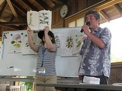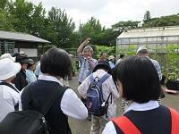
グローバル・サイエンス講座
平成２８年７月１５日の３、４時限を用いて、２年理数科の生徒を対象に科学英語に関する「グローバル・サイエンス講座」が開かれました。講師は、筑波大学国際統合睡眠医科学研究機構の Kristopher S.MCEOWN 先生で、ご専門の睡眠心理学の研究内容に加え、出身国のカナダや研究者になった動機などのお話も幅広くして下さいました。オールイングリッシュでの講演でしたが、生徒は興味深く耳を傾け、質疑応答の際には多くの生徒が積極的に質問をしていました。
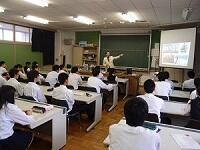